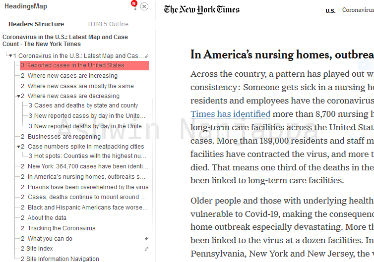

Every HTML webpage already has a hierarchical structure in its content if the author has used section headings. When I am reading a HTML webpage with such headings, I find it useful to refer to the document's outline. Web browsers should ideally have a feature where they display this outline, but sadly they don't.
HeadingsMap extension on a NYTimes webpage
The HeadingsMap extension for Firefox displays this section heading outline tree for the webpage you are viewing.
Click its icon in the toolbar on any webpage to see the outline displayed on the left side.
Click on any section heading in the outline to navigate automatically to that heading. This is great when reading a long webpage.
If the section headings have links, the links are available for copying through a link (🔗) symbol.
If there are errors in the heading hierarchy, they are highlighted in red color in the outline. For example, if a <h1> is followed by a <h3>, without a <h2> before it.
Use its Settings at the top-right corner to change options like bright/dark theme, show hidden headings and HTML5 outline. At the very least, I recommend switching the theme to bright, since many of the UI elements are hard to see in the dark mode.
I find this extension to be essential. I only wish it had a keyboard shortcut to toggle it on and off.